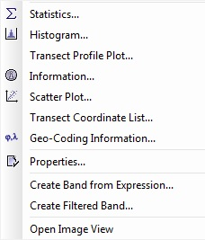

| Property Editor | |
The property editor can be used to edit the properties of a product, a tie-point grid or a (virtual) band.
Depending on the kind of object for that the propery editor is invoked, different kinds of properties can be edited. The name and the description can be changed in all cases. Additionally following properties can be edited:

The property editor can be invoked from the context menu, where it is the top item. The context menu is activated with a click on the rigth mouse button over the object that should be edited.
